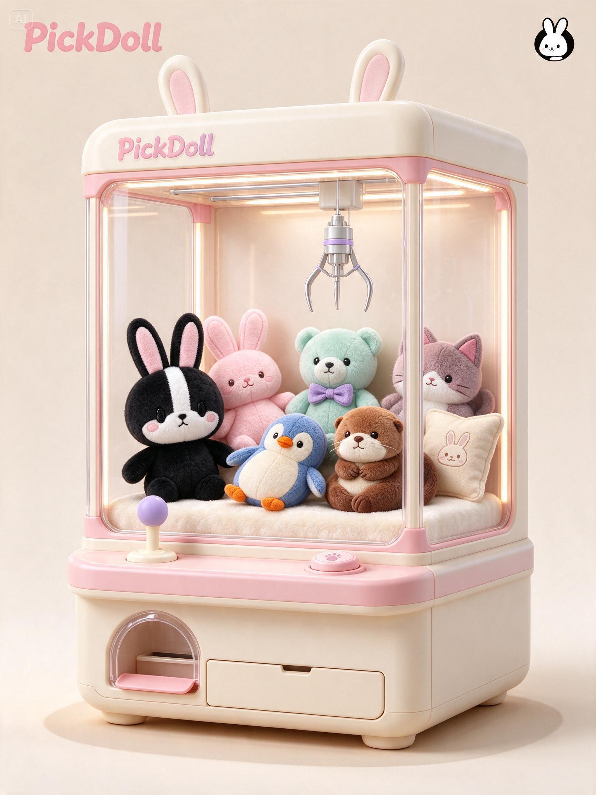
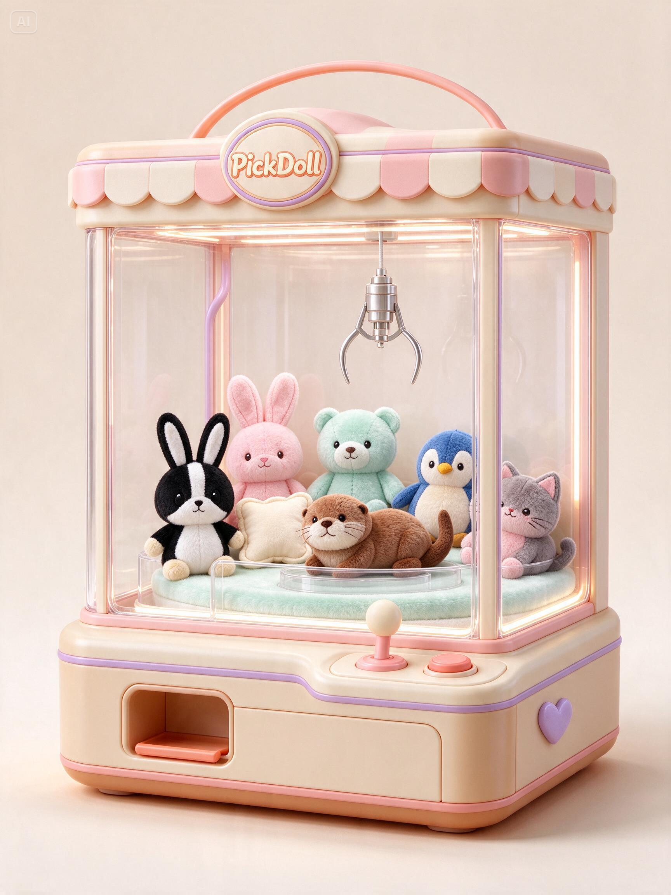
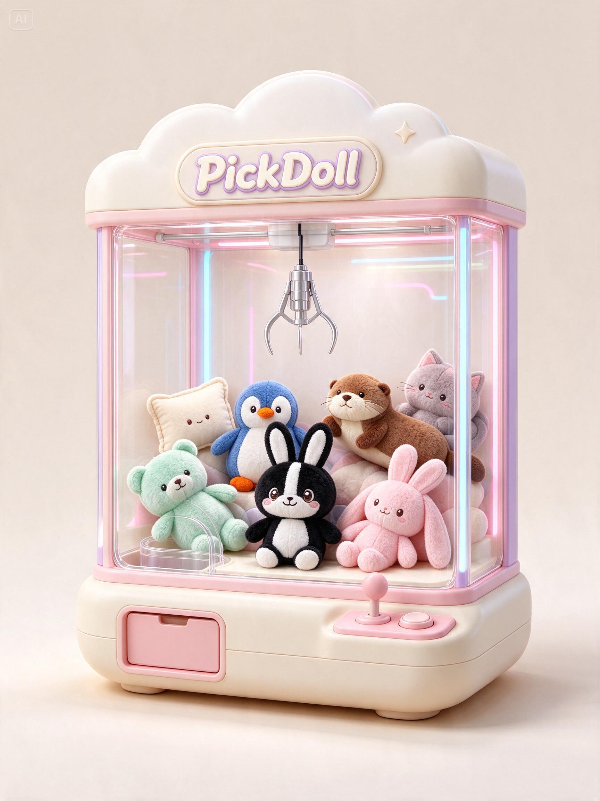

1 · 토끼의 작은 장난감집


둥근 창틀, 작은 토끼 귀, 크림·핑크 외장. 기존 흑백 토끼 마스코트와 연결하기 쉬운 방향.
선택 확정: 1번 토끼 장난감집. 12주차에 둥근 얇은 프레임·크림/핑크·작은 토끼 귀를 적용하고, 시안보다 간판과 조작 선반을 더 작게 제작한다.
2026년 11월 26일 · 다음 차수 외형 품평용. 캐비닛보다 인형이 먼저 보이는 큰 창과 둥근 형태를 비교한다. 이미지 시안이며 Unity 구현·빌드는 진행하지 않았다. 최종 방향은 미선택 상태다.

둥근 창틀, 작은 토끼 귀, 크림·핑크 외장. 기존 흑백 토끼 마스코트와 연결하기 쉬운 방향.

작은 차양과 아치 장식, 따뜻한 캔디 가게 분위기. 장식이 인형을 가리지 않는지 후속 품평.

구름 지붕과 파스텔 라인 조명. 동화적인 인상이 강하며 상단 부피는 구현 시 더 줄이는 후보.
출발점 제안: 1안의 단순한 둥근 창틀과 토끼 포인트를 기본으로 비교한다. 세 시안의 장식을 모두 더하지 않고 한 방향을 선택한다. 실제 모델링에서는 창틀 두께·상단 및 하부 점유 면적·유리 충돌·배출 경로·시점 가독성을 확인한다. 이미지의 풍성한 털 표현과 내부 구조는 게임 구현에 맞게 단순화하고 검증한다.